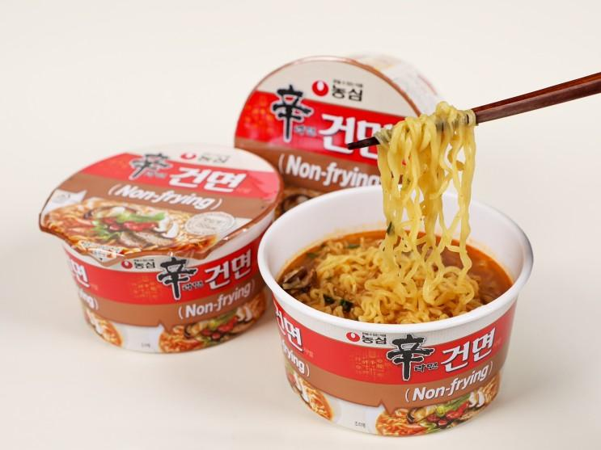
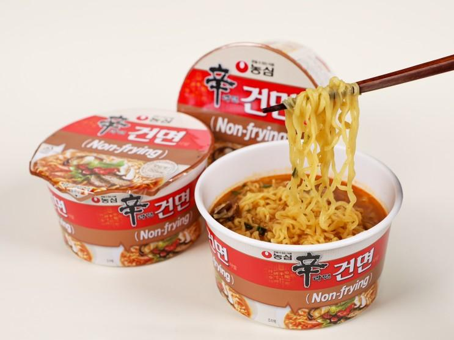
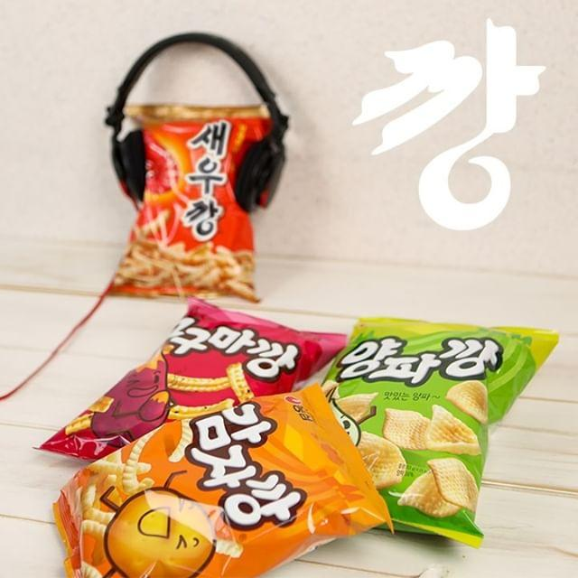
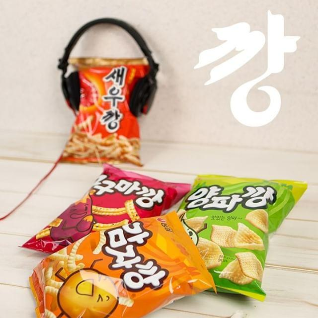
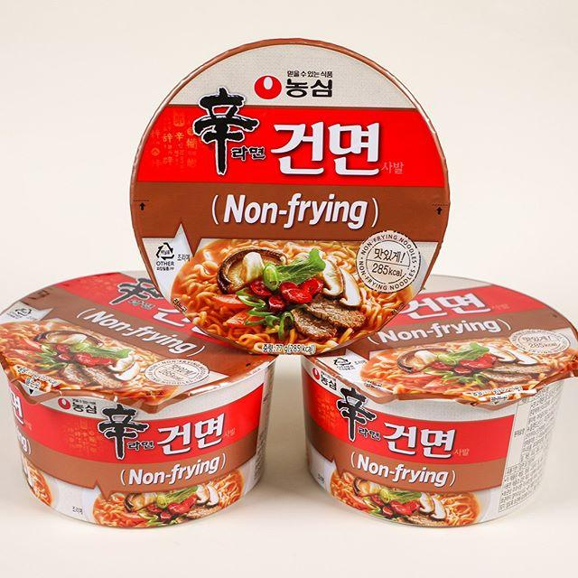
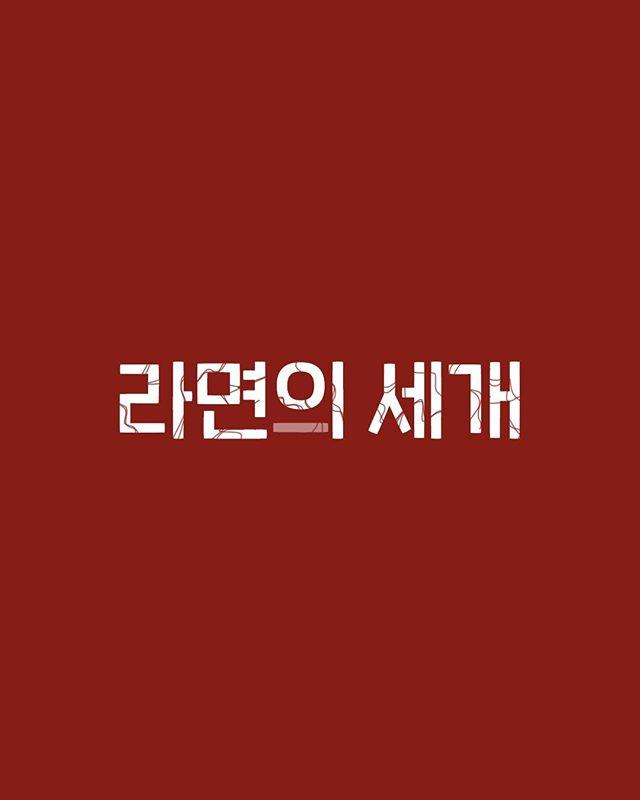
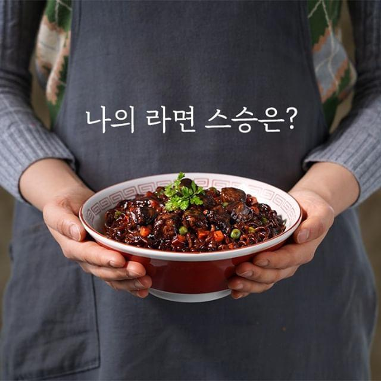
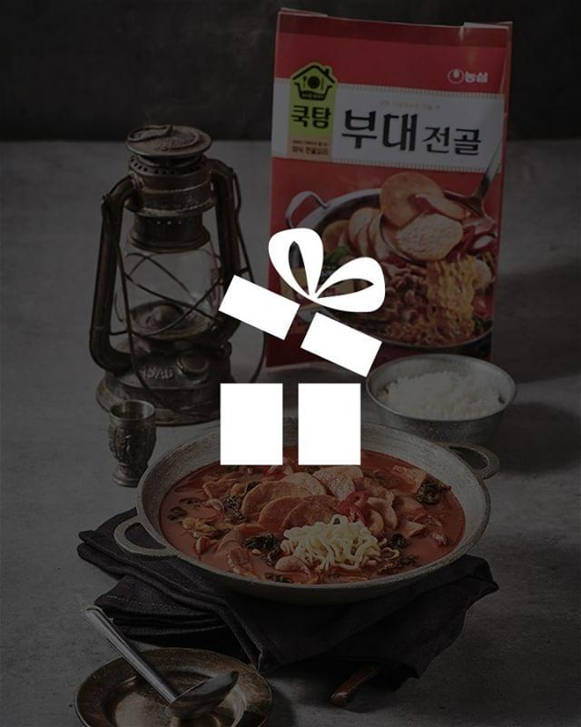

블로그
[보도자료] 맛있고
깔끔한 건면, 간편하게
즐겨요! 농심, '신라면건면사발' 출시
맛있고 깔끔한 건면, 간편하게 즐겨요!농심, '신라면건면사발' 출시신라면건면이 간편함을 더한 용기면으로 재탄생했다. 농심은 신제품 ‘신라면건면사발’을 출시한다고 밝혔다. 지난해 라면시장 최고의 히트 신제품인 신라면건면을 그대로 용기면에 담은 제품이다. 농심은 신라면건면의 흥행과 소비자의 용기면 출시 요청에 힘입어 신라면건면사발을 출시하게 됐다. 맛있고 깔끔한 신라면건면의 매력은 살리면서, 더 가볍고 간편하게 만들었다. 신라면건면사발의 열량은 285kcal이며, 조리시간은 봉지라면보다 30초 짧아진 4분이다.농심은 끓여 먹는 봉지라면과 달리 뜨거운 물을 붓는 용기면이라는 조리법의 차이를 극복하는데.......
.svg)
보도자료
농심, ‘신라면건면사발’ 출시 신라면건면이 간편함을 더한 용기면으로 재탄생했다. 농심은 신제품 ‘신라면건면사발’을 출시한다고 밝혔다. 지난해 라면시장 최고의 히트 신제품인 신라면건면을 그대로 용기면에 담은 제품이다.
맛있고 깔끔한 건면, 간편하게 즐겨요! 농심, ‘신라면건면사발’ 출시 신라면건면이 간편함을 더한 용기면으로 재탄생했다. 농심은 신제품 ‘신라면건면사발’을 출시한다고 밝혔다. 지난해 라면시장 최고의 히트 신제품인 신라면건면을 그대로 용기면에 담은 제품이다. 농심은 신라면건면의 흥행과 소비자의 용기면 출시 요청에 힘입어 신라면건면사발을 출시하게 됐다. 맛있고 깔끔한 신라면건면의 매력은 살리면서, 더 가볍고 간편하게 만들었다. 신라면건면사발의 열량은 285kcal이며, 조리시간은 봉지라면보다 30초 짧아진 4분이다. 농심은 끓여 먹는 봉지라면과 달리 뜨거운 물을 붓는 용기면이라는 조리법의 차이를 극복하는데 중점을 두었다. 특히, 뜨거운 물에 잘 익으면서도 건면의 쫄깃한 식감을 구현하는 것이 제품 개발의 핵심이었다. 농심 관계자는 “그간 쌓아온 건면과 용기면 제조기술을 집약해 신라면건면의 매력을 온전히 용기에 담았다”고 말했다. 신라면건면사발에는 청양고추를 추가해 매운맛을 살렸고, 소고기와 표고버섯 등 재료로 감칠맛을 더했다. 지난해 2월 출시된 신라면건면은 기름에 튀기지 않아 깔끔한 맛과 낮은 열량으로 많은 사랑을 받아 건면 대중화의 새 장을 연 제품으로 평가되고 있다. 출시 이래로 현재까지 누적판매량 7천 5백만개를 돌파하며, 지금까지도 꾸준히 인기를 이어가고 있다. ###
 

인스타그램
"화려한 포장이 나를 감싸네~" "오늘은 1일 몇깡하셨나요?" - 과자 먹다가 볼살 깨물기 금지~ 고구마깡 먹다가 꾸러기 표정😜 금지, 꾸러미 포장 구입 가능! - 🌧☔비 올땐 새우깡~ - #새우깡 #고구마깡 #감자깡 #양파깡 #1일1깡 #과자 #스낵 #농심

인스타그램
『#신라면건면사발 출시』 '맛있고 깔끔한' 신라면건면에 '간편함'을 더하다! 드.디.어! 신라면건면사발이 출시되었습니다. - 몸 관리중이어서, 끓이기 귀찮아서~ 안 먹었던 이런 사람들에게 추천합니다. 신라면건면사발 285 Kcal! - 내 이야기 같다면 지금 당장~ 신라면건면사발 시식체험단에 댓글로 응모하세요! 추첨을 통해 신라면건면사발을 드립니다. ✔기간: ~5/19일까지 ✔발표: 5/20(수) ✔경품: 신라면건면사발 (70명) - #신라면건면사발 #신라면건면 #신라면 #건면 #슬기로운건면생활 #컵라면 #편의점 #농심 #nongshim

인스타그램
『#사랑배신혼란』 "매운맛에 빠진게 죄는 아니잖아!!" 완벽했던 그들의 삶 속에 피어난 균열... 짜파게티와 너구리, 그리고 앵그리RtA 그들의 운명은? - 절찬리 판매중 『라면이 세 개』 - #짜파구리 #라면이세개 #라면의세계 #너구리 #짜파게티 #앵그리RtA #농심 #nongshim
인스타그램
『#찰비빔면』 '오늘 뭐 먹지??' - 카피추님과 허영지님의 찰진 노래, 찰송♬🎵 - 아직도 헷갈리나요~ 짜~짜라짜짜 비벼! 찰찰찰~ 찰비빔면~ 상큼~한 찰비빔면 내 입맛에 찰지게 착! 농심 찰비빔면 - #찰비빔면 #비빔면 #카피추 #허영지 #광고 #CF #비빔국수 #농심 #nongshim

인스타그램
『#스승의날』 "난 언제 처음 라면을 끓였지?" "난 누구한테 라면 끓이는 걸 배웠지?" "내가 처음 먹은 라면은 뭐였지?" - 나의 라면 스승은 누구인가요? - #스승 #라면 #농심 #nongshim

유투브
#새우깡_창조 손이가요 손이가요 손이가요오늘 뭐 먹지?? 아직도 헷갈리나요~ 짜~짜라짜짜 비벼! 찰찰찰~ 찰비빔면~ 상큼~한 찰비빔면 내 입맛에 찰지게 착!
유투브
[슬기로운 백세가족] 좋은 물 백두산 물이 우리집으로, 백산수앱,애비야~ 백산수 주문은 백산수앱이야! 좋은 물 백두산 물이 우리집으로, 백산수앱
유투브
[슬기로운 백세가족] 백두산 청정 원시림의 좋은 물 백산수,좋은 물은 말이지~ 할아버지 그건 백산수잖아요! 백두산 청정 원시림의 좋은 물, 백산수

인스타그램
#이벤트발표 ⚠️ #돌밥돌밥 이벤트에 참여해주신 모든 분께 감사드립니다 - ① 당첨자는 인스타그램 DM으로 경품 발송을 위한 개인정보를 보내주시기 바랍니다 예) (쿡탐 부대전골 / 이름 / 전화번호 / 주소 / 개인정보 활용에 동의합니다) ② 5/17(일)까지 답변이 없을 시 당첨이 취소될 수 있습니다 (개인정보 보내주신 순서대로 경품 발송합니다) ③ 당첨자의 실수로 잘못된 연락처를 제공하여 경품이 오발송된 경우 재발송이 불가능합니다 ❗당첨자(20명)는 DM 발송 부탁 드립니다 @1333._.3331 @51dum @beauty_eun89 @chung.howard @daizi_0 @e_lle0 @fre_e_dum @im_ddun_ddun @jelly__0o0 @jennifer_the_pursuer @jimin.jihan @jmsg24 @kaeul15 @loveisis73 @nature_yun @pohs__a_a @rlatngus994123 @soonguk44 @ssintin6 @yoons2426 - #쿡탐 #부대전골 #장터소고기 #돼지김치 #마라전골 #전골 #간편식 #농심 #nongshim #이벤트발표

농시미이벤트
농시미이벤트,회원전용 포인트샵 앵그리짜파구리 큰사발